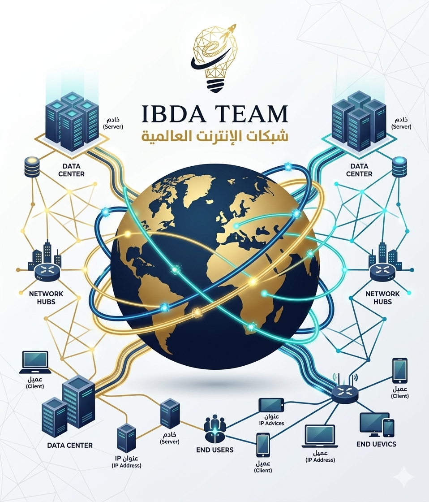

ما هو الإنترنت الحقيقي؟
الإنترنت ليس "سحابة" في الهواء كما يظن البعض، بل هو **أضخم هيكل هندسي بناه البشر**. هو عبارة عن ملايين الكيلومترات من كابلات الألياف الضوئية (Fiber Optics) التي تمتد في قيعان المحيطات لتربط القارات ببعضها بسرعة الضوء.

معلومة تقنية: هل تعلم أن 99% من بيانات العالم تنتقل عبر الكابلات البحرية، وليس عبر الأقمار الصناعية كما يشاع؟ الأقمار الصناعية بطيئة مقارنة بسرعة الألياف الضوئية!
معمارية العميل والخادم (Client-Server)
لكي يعمل الإنترنت، نحتاج إلى "طرفين" دائمين:
- العميل (Client): هو جهازك (متصفح كروم، تطبيق موبايل) الذي يطلب المعلومة.
- الخادم (Server): هو كمبيوتر بمواصفات جبارة يعمل 24/7 ليقدم لك الملفات.
.png)
كيف يجد جهازك الطريق؟
عندما تكتب `google.com` في متصفحك، تحدث عملية معقدة في أجزاء من الثانية:
- الـ IP Address: هو الرقم الفريد لكل جهاز (مثل رقم الموبايل)، وبدونه لا تعرف البيانات أين تذهب.
- الـ DNS: هو "مترجم" الإنترنت، يحول الاسم الذي تحفظه (google.com) إلى رقم يفهمه الكمبيوتر.
- الـ Routers: هي "عساكر المرور" التي توجه بياناتك عبر أفضل طريق ممكن لتصل في أسرع وقت.